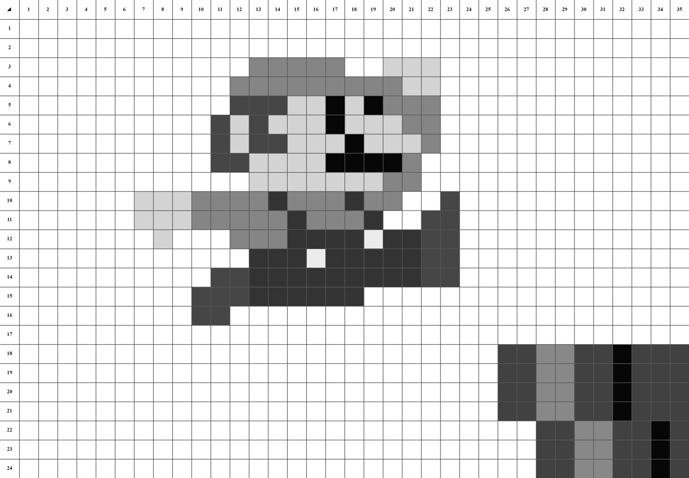

Introduction à la programmation
Structure de données
Cours Magistral 4/6


Table of Contents
Retour sur le jeu de nim
Une proposition de solution commentée
'''
File: nim_fr.py
Created Date: Monday September 13th 2021 - 01:57pm
Author: Ammar Mian
Contact: ammar.mian@univ-smb.fr
-----
Last Modified: Mon Sep 13 2021
Modified By: Ammar Mian
-----
Copyright (c) 2021 Université Savoie Mont-Blanc
-----
Ce programme illustre une implémentation du jeu de Nim dans le cadre
d'un cours d'introduction à la programmation donné à Polytech Annecy-Chambéry.
Il s'agit ici d'un programme fonctionnel qui permet de faire une partie à 2 joueurs
'''
def choix_joueur(nombre_batonnets):
"""Fonction qui permet de prendre le choix du joueur et vérifie s'il est bon.
Répète tant que le choix est mauvais.
Parameters
----------
nombre_batonnets : int
Nombre de batonnets restant dans le jeu.
Returns
-------
int
Le nombre de batonnets que le joueur veur jouer.
"""
nombre_pris = int(input("Entrez un nombre de bâtonnets : "))
while (nombre_pris <=0 or nombre_pris>min(3, nombre_batonnets)):
print("Le nombre de bâtonnets à prendre n'est pas correct !")
print('Choisir une valeur entre 1 et ', min(3, nombre_batonnets), '.')
nombre_pris = int(input("Entrez un nombre de bâtonnets : "))
return nombre_pris
def tour_jeu(no_joueur, nombre_batonnets):
"""Fonction qui permet de faire un tour de jeu en fonction du numéro du joueur actuel.
Parameters
----------
no_joueur : int
Numéro du joueur.
nombre_batonnets : int
Nombre de batonnets restant dans le jeu.
Returns
-------
int
Nombre de batonnets restant après tour du joueur.
"""
print("Joueur no.", no_joueur)
nombre_pris = choix_joueur(nombre_batonnets)
nombre_batonnets -= nombre_pris
if nombre_batonnets == 0:
print("Félicitations Joueur no. {}!! Vous avez gagné !".format(no_joueur))
return 0
else:
print("Il reste ", nombre_batonnets, "batonnets.")
print('|'*nombre_batonnets)
print("")
return nombre_batonnets
if __name__ =='__main__':
print("Bienvenue dans le jeu de Nim avec batonnets !\n")
nombre_batonnets = 12
no_joueur = 1
print("Il reste ", nombre_batonnets, "batonnets.")
print('|'*nombre_batonnets)
print("")
while nombre_batonnets>0:
nombre_batonnets = tour_jeu(no_joueur, nombre_batonnets)
no_joueur = 1*(no_joueur==2) + 2*(no_joueur==1)
print("Merci d'avoir joué !")
Notion de regroupement et Structures de données

Problématique
De nombreux problèmes nécessitent le traitement de données « complexes » qui ne peuvent pas être représentées par une variable de type simple.
Exemples:
- Une couleur
- Une image
- Une date
- Une adresse
Exemple 1 : représenter une couleur

Exemple RGB:
couleur1_rouge = 192
couleur1_vert = 127
couleur1_bleu = 77
couleur2_rouge = 33
couleur2_vert = 4
couleur2_bleu = 77
→ Pas optimal !
Exemple 2 : Une image noir et blanc

Exemple avec variables :
pixel_1_1 = 255
pixle_1_2 = 255
...
pixel_24_"5 = 45
→ Pas optimal !
Exemple 3 : Une adresse
Adresse de personne 1 :
Numero : 5
Rue : Chemin de Bellevue
Code postal : 74940
Ville : Annecy-le-vieux
Exemple avec variables :
personne_1_numero = 5
personne_2_rue = "Chemin de Bellevue"
...
→ Pas optimal !
Types de regroupements
Il en existe 3 types :Regroupement d'informations de même types : Images, couleur, etc → listes (en python ne force pas le même type), numpy
Regroupement d'informations de type différents sans attribut pour classer: Adresse, date, etc → listes, tuples et sets
Regroupement d'informations de type différents avec attribut pour classer: Adresse, date, etc → dictionnaires
Les listes (list)

Les listes sont utilisées pour stocker plusieurs éléments dans une seule variable de manière ordonnée
➡️ [1, 2, 3] est différent de [2, 3, 1]
Les listes peuvent être créées de plusieurs manières
>>> my_list = list()
>>> my_list = []
>>> my_list = [1, 2, 3]
>>> my_list = [x*2 for x in my_other_list]
Accéder aux éléments d'une liste
>>> my_list = [1, 2, 3]
>>> print(my_list[0])
NOTE : les indices commencent à 0 !
Analogie avec les chaines de caractères
>>> my_string = "Hello world"
>>> print(my_string[0])
H
NOTE : les indices commencent à 0 !
Modifier une valeur dans une liste
>>> my_list = [1, 2, 3]
>>> my_list[0] = 10
Ajouter des éléments à une liste
>>> my_list = [1]
>>> my_list.append(2)
Que se passe-t-il si vous essayez de faire cela ?
>>> my_list[2] = 3
Supprimer des éléments d'une liste
>>> my_list.pop()
>>> my_list.pop(1)
>>> del my_list[1]
Boucle sur les éléments d'une liste
>>> for el in my_list:
>>> print(el)
Sélectionnez un sous-ensemble de la liste
>>> my_list[start:end:step]
>>> my_list[:end]
>>> my_list[start:]
Vérifiez la taille de la liste
>>> len(my_list)
NOTE : nous ne pouvons pas étudier ici toutes les fonctions disponibles. Vous devez apprendre à utiliser la documentation :
https://docs.python.org/3/library/stdtypes.html#sequence-types-list-tuple-range
Exercice
Écrire un programme qui demande à l'utilisateur de saisir une liste d'entiers, puis à l'aide de parcours successifs effectue les actions suivantes :
(Faire des fontions)
- Afficher la liste
- Afficher la lsite en colonne de manière à afficher l'indice et son contenu
- Additionner tous les éléments de la liste
- Crée une nouvelle liste qui se le multiple par $3$ de tous les éléments de la liste
- Obtenir le plus grand nombre de la liste
- Calcule la somme des nombres impairs
Les tuples (tuple)
Les tuples sont des listes immuables
Qu'est-ce que ça veut dire?
Un tuple ne peut pas être modifié après sa création
>>> my_tuple = (1, 2, 3)
>>> my_tuple = t[1]
2
>>> my_tuple[1] = 1
Traceback (most recent call last):
File "< stdin >", line 1, in < module >
TypeError: 'tuple' object does not support item assignment
Quel est l'intérêt ?
Avantages :
- Plus rapide d'accès
- Données sont protégés (couleur est fixée)
| List | Tuple |
|---|---|
| It is mutable | It is immutable |
| The implication of iterations is time-consuming in the list. | Implications of iterations are much faster in tuples. |
| Operations like insertion and deletion are better performed. | Elements can be accessed better. |
| Consumes more memory. | Consumes less memory. |
| Many built-in methods are available. | Does not have many built-in methods. |
| Unexpected errors and changes can easily occur in lists. |
Unexpected errors and changes rarely occur in tuples. |
Les ensembles (set)

Les ensembles sont des listes non ordonnées
Qu'est-ce que ça veut dire ?
Les éléments ne sont pas accessibles par position
>>> my_set = set([1,2,3])
>>> my_set
{1, 2, 3}
>>> my_set[1]
Traceback (most recent call last):
File "< stdin >", line 1, in < module >
TypeError: 'set' object is not subscriptable
Ls ensembles ne possèdent pas d'éléments doubles
>>> ensemble = {5,6,5,6,5}
>>> print(ensemble)
{5, 6}
Les dictionnaires (dict)

Problème
On veut pouvoir avoir une organisation des données sous forme d'attributs. Par exemple pour l'adresse, pour avoir accès à la rue, le numéro, le code postal, etc.
Un dictionnaire est un objet de mappage, c'est-à-dire qu'il mappe des valeurs pouvant lier à des types arbitraires
→ Les éléments d'un dictionnaire sont identifiés par une clé
Les dictionnaires peuvent être créées de plusieurs manières
>>> my_dict = dict()
>>> my_dict = {}
>>> my_dict = {"key1": 1, "key2", 2}
→ Quel est le code pour créer un dictionnarie représentant une adresse ?
Accéder aux éléments d'une dictionnaire
>>> my_dict = {"key1": 1, "key2", 2}
>>> print(my_dict["key1"])
>>> print(my_dict.get("key1"]))
NOTE : Les index peuvent être tout ce qui est hachable !
Modifier une valeur dans une dictionnaire
>>> my_dict = {"key1": 1, "key2", 2}
>>> my_dict["key1"] = 3
Ajouter des éléments à une dictionnaire
>>> my_dict = {"key1": 1, "key2", 2}
>>> my_dict["key3"] = 3
Que se passe-t-il si vous essayez de faire cela ?
>>> print(my_dict["key4"])
Supprimer des éléments d'une dictionnaire
>>> my_list.pop("key1")
Boucle sur les éléments d'une dictionnaire
>>> for el in my_dict:
>>> print(el)
Qu'est-ce qu'il imprime ?
Boucle sur les éléments d'une dictionnaire
>>> for k in my_dict:
>>> print(k)
>>> for v in my_dict.values():
>>> print(v)
>>> for k, v in my_dict.items():
>>> print(k)
Vérifiez la taille du dictionnaire
>>> len(my_dict)
NOTE : nous ne pouvons pas étudier ici toutes les fonctions disponibles. Vous devez apprendre à utiliser la documentation :
https://docs.python.org/3/library/stdtypes.html#mapping-types-dict
Exercice
On définit un QCM comme une liste de questions. Une question est un dictionnaire avec les clés :Complétez le programme suivant :
- libelle : qui donne le libellé de la question.
- choix : qui est un tableau des différents choix de réponse.
- reponse : qui est un nombre correspondant à l’index de la bonne réponse.
qcm = [] # Le contenu du QCM à définir
def poser_question(question) :
"""Une fonction qui affiche la question,
les choix possibles de réponse et qui demande à
l'utilisateur son choix.
La fonction retourne ``True`` si l'utilisateur a choisi
la bonne réponse
"""
pass
score = 0
# on parcourt la liste des questions et on calcule le score de l'utilisateur
# ....
# on affiche le score
print("Vous avez obtenu un score de ", score)